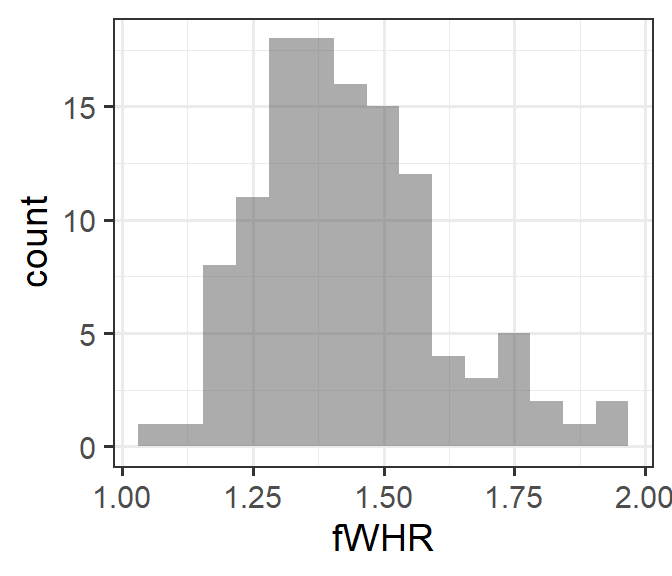
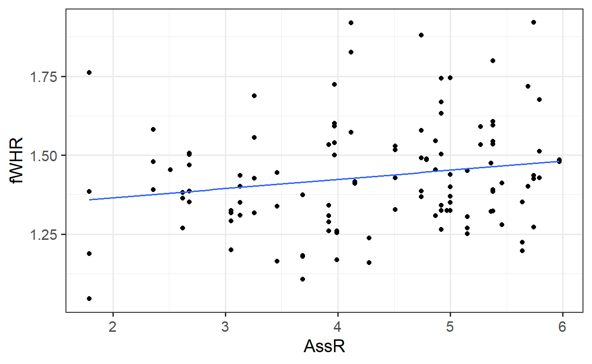
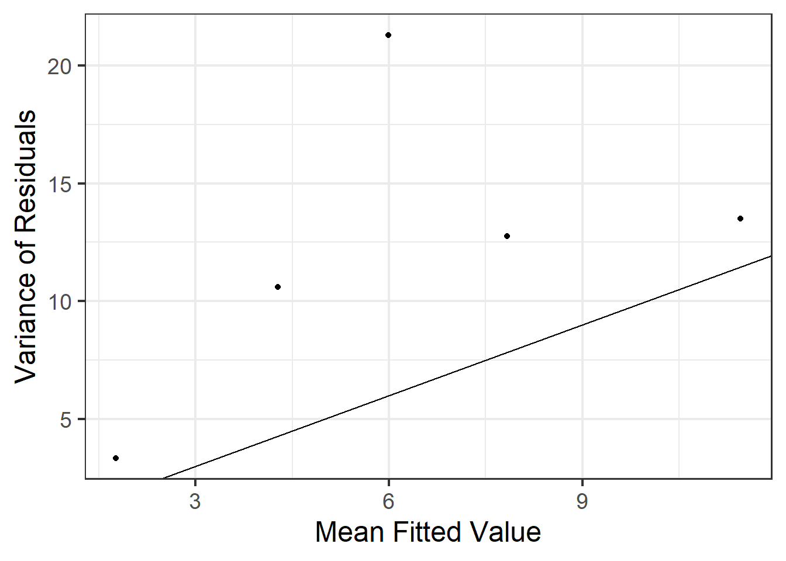

Chapter 2 Linear Regression
You probably learned something about linear regression in a previous course. Here, we briefly review the main concepts of simple linear regression and quickly expand our tool box to multiple regression (with both quantitative and categorical predictors).
2.1 Data
We will consider a small dataset from an article by J.S. Martin and colleagues, titled Facial width-to-height ratio is associated with agonistic and affiliative dominance in bonobos (Pan paniscus)
Notes: variable fWHR is the facial width-height ratio and AssR is the Assertiveness score of affiliative dominance. normDS is another dominance score. A few figures of the data are below - we will do some more exploration together.
## Observations: 117
## Variables: 8
## $ Name <fct> Zuani, Zuani, Zorba, Zorba, Zorba, Zomi, Zomi, Zamba, Z...
## $ Group <fct> Apenheul, Apenheul, Wilhelma, Wilhelma, Wilhelma, Frank...
## $ Sex <fct> Female, Female, Male, Male, Male, Female, Female, Male,...
## $ Age <int> 22, 22, 34, 34, 34, 15, 15, 14, 14, 14, 18, 18, 18, 18,...
## $ fWHR <dbl> 1.475052, 1.321814, 1.581446, 1.479237, 1.390086, 1.340...
## $ AssR <dbl> 5.36, 5.36, 2.36, 2.36, 2.36, 3.92, 3.92, 4.74, 4.74, 4...
## $ normDS <dbl> 1.430, 1.430, 2.341, 2.341, 2.341, 3.087, 3.087, 3.035,...
## $ weight <dbl> 24.0, 24.0, NA, NA, NA, NA, NA, 41.6, 41.6, 41.6, 38.0,...
2.2 Simple linear regression, Residuals & Least squares
First, let’s review and consider a simple (one-predictor) linear regression model. Fit the model
Extract the slope and intercept values:
## (Intercept) AssR
## 1.30685287 0.02918242Add the regression line to the plot:

##
## Call:
## lm(formula = fWHR ~ AssR, data = bonobos)
##
## Residuals:
## Min 1Q Median 3Q Max
## -0.31320 -0.11369 -0.01242 0.09008 0.49241
##
## Coefficients:
## Estimate Std. Error t value Pr(>|t|)
## (Intercept) 1.30685 0.06283 20.801 <2e-16 ***
## AssR 0.02918 0.01420 2.055 0.0421 *
## ---
## Signif. codes: 0 '***' 0.001 '**' 0.01 '*' 0.05 '.' 0.1 ' ' 1
##
## Residual standard error: 0.1689 on 115 degrees of freedom
## Multiple R-squared: 0.03542, Adjusted R-squared: 0.02704
## F-statistic: 4.223 on 1 and 115 DF, p-value: 0.042132.2.1 Using lm() to fit a linear regression in R
2.2.2 Equation of the fitted regression line
2.3 Multiple regression
Rarely does our response variable really depend on only one predictor. Can we improve the model by adding more predictors?
## (Intercept) AssR weight
## 0.944790930 0.039888045 0.008644299

2.3.1 Is it really better?
How do we know if the model with more predictors is “better”? (For a more detailed answer, wait about a week…) But before we can define a “beter” model: how did R find the “best” intercept and slopes?
2.3.2 Regression residuals = “errors”
2.3.3 Computing Predictions
Use the regression equation to compute predicted values for the three data points below:
## fWHR AssR weight
## 8 1.880866 4.74 41.6
## 25 1.798387 5.38 50.6
## 41 1.591440 3.97 NA
## 65 1.545019 4.87 38.52.4 Predictors with two categories

## (Intercept) AssR weight SexMale
## 1.065420976 0.058435841 0.002257142 0.128484275How does the model incorporate this covariate mathematically?
2.4.1 Predictors with more categories

## (Intercept) AssR weight SexMale
## 1.007734691 0.064361973 0.003458979 0.124854271
## GroupFrankfurt GroupPlanckendael GroupTwycross GroupWilhelma
## 0.037426358 -0.008464572 -0.112907589 0.011186724
## GroupWuppertal
## -0.004364826How does the model incorporate this covariate mathematically?
2.5 Returning to the R Model Summary
There are several bits of information you should be able to extract from the summary() output R produces on a fitted linear regression model:
- \(\beta\)s, Coefficient Estimates
\(\sigma\), labeled “residual standard error”
\(R^2\) (adjusted)
##
## Call:
## lm(formula = fWHR ~ AssR + weight + Sex + Group, data = bonobos)
##
## Residuals:
## Min 1Q Median 3Q Max
## -0.38288 -0.09488 -0.02642 0.07196 0.48464
##
## Coefficients:
## Estimate Std. Error t value Pr(>|t|)
## (Intercept) 1.007735 0.217585 4.631 2.05e-05 ***
## AssR 0.064362 0.021158 3.042 0.0035 **
## weight 0.003459 0.005547 0.624 0.5353
## SexMale 0.124854 0.059278 2.106 0.0394 *
## GroupFrankfurt 0.037426 0.074892 0.500 0.6191
## GroupPlanckendael -0.008465 0.075407 -0.112 0.9110
## GroupTwycross -0.112908 0.074779 -1.510 0.1364
## GroupWilhelma 0.011187 0.085538 0.131 0.8964
## GroupWuppertal -0.004365 0.071292 -0.061 0.9514
## ---
## Signif. codes: 0 '***' 0.001 '**' 0.01 '*' 0.05 '.' 0.1 ' ' 1
##
## Residual standard error: 0.1691 on 59 degrees of freedom
## (49 observations deleted due to missingness)
## Multiple R-squared: 0.2517, Adjusted R-squared: 0.1502
## F-statistic: 2.48 on 8 and 59 DF, p-value: 0.021672.6 Predictions from the model
2.6.1 By Hand
The equation for the fitted model above is:
\[ y = \beta_0 + \beta_1x_1 + \beta_2x_2 + \beta_3I_{Male} + \beta_4I_{Frankfurt} + \beta_5I_{Planckendael} + \beta_6I_{Twycross} + \beta_7I_{Wilhelma} + \beta_7I_{Wuppertal} + \epsilon\]
where
- \(y =\)
- \(\beta_0=\)
- \(x_1=\)
- \(x_2=\)
- \(\beta_1, \beta_2, \beta_3 ...\) are:
- \(I_{Male} =\)
- \(I_{Frankfurt} =\)
- \(I_{Planckendael} =\) , etc.
- \(\epsilon=\)
2.6.1.1 Comprehension check:
What is the expected fWHR (according to this model) for a 30 kg female bonobo at the Wilhelma zoo?
2.6.2 Prediction Plots in R
We can ask R to compute predictions for all the data points in the real dataset.
## Error: Column `preds` must be length 117 (the number of rows) or one, not 68Wait, what? This error is because the lm() function removes rows containing missing values from the dataset, so it computes only 68 residuals (for the complete cases in the data). This doesn’t match the 117 rows in the original data. We can solve the problem by omitting rows with missing values first. To be safe, we first select only the variables we need, so we don’t omit rows based on missing values in unused variables.
b2 <- bonobos %>%
select(fWHR, weight, AssR, Sex, Group) %>%
na.omit() %>%
mutate(preds = predict(mlr3))We have a full set of predictions!
But if we plot these predictions on a scatter plot of fWHR as a function of AssR, we do not get a straight line, because the predictions are also impacted by varying values of weight, Sex, and Group:

But…we would really like a straight line that helps us visualize the meaning of the \(\beta\) (slope coefficient) for AssR. We can make predictions for a hypothetical dataset, in which AssR varies over a reasonable range, but the other predictors stay constant. This lets us see how AssR (and only AssR) affects the response, without contributions from other predictors. In choosing the values to include in hypothetical dataset, we often choose to hold variables constant at their most common or median values, but not blindly: also, avoid impossible or implausible variable combinations (for example, specifying that a person lives in the state of Michigan but the city of Chicago, or that they are a 5-year-old person with 4 children). In this case, to match the figures in the published paper, we are also going to vary the Sex - but generally you’d only allow one predictor to vary.
fake_data <- expand.grid(AssR = seq(from=1.8, to=5.7, by=0.05),
weight = 38.5,
Sex = c('Female', 'Male'),
Group = 'Wuppertal')
fake_data <- fake_data %>%
mutate(preds = predict(mlr3, newdata = fake_data))
gf_line(preds ~ AssR, color = ~Sex, data=fake_data) %>% gf_labs(y='Predicted\nfWHR')
2.6.2.1 Comprehension checks:
- Should we overlay prediction-plot line(s) on the data scatter plot?
- How do you think the plot would look if we changed the constant predictor values?
- What is missing from this picture?